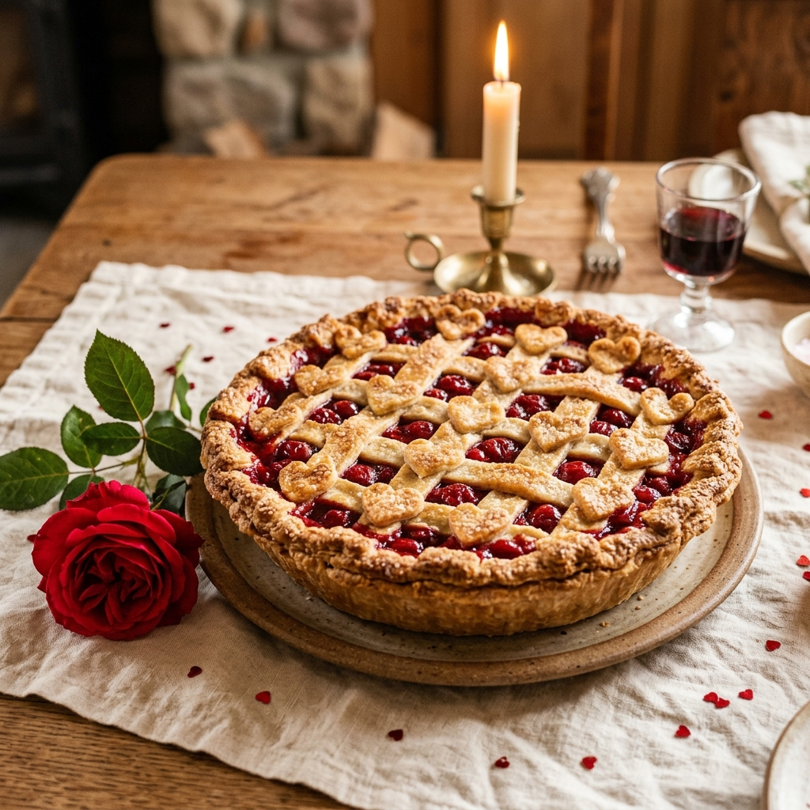

Heart Lattice Pie
A rustic fruit pie with a woven pastry lattice and heart cutouts—great for pattern building.

What You Need (Ingredients & Tools)
Step-by-Step Visual Guide
Step 1: Wash & Dry Hands
Wash your hands carefully with warm water and soap before handling the pastry.
Step 2: Line the Pie Dish
Unroll one sheet of pastry and gently press it into the base and sides of your round pie dish.
Step 3: Spoon in the Fruit Filling
Spoon the cherry or berry filling into the pastry base and spread it evenly with the back of your spoon.
Step 4: Cut Long Pastry Strips
Unroll the second pastry sheet on a board and use a child-safe cutter to slice long strips.
Step 5: Weave the Lattice Top
Lay the strips across the pie in a criss-cross grid pattern.
Step 6: Add Heart Cutouts
Use leftover pastry to press out heart shapes and place them around the edge of your pie.
Step 7: Brush & Bake with an Adult
Brush gently with milk or beaten egg. Ask an adult to bake at 200°C (180°C fan) for 25–30 minutes until golden.